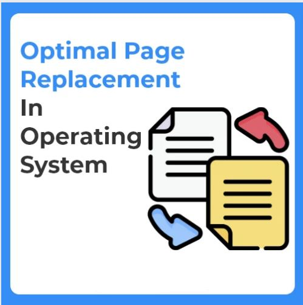

Optimal Page Replacement
Optimal page replacement algorithm is the most desirable page replacement algorithm that we use for replacing pages. This algorithm replaces the page whose demand in the future is least as compared to other pages from frames (secondary memory).The replacement occurs when the page fault appears. The purpose of this algorithm is to minimize the number of page faults.
